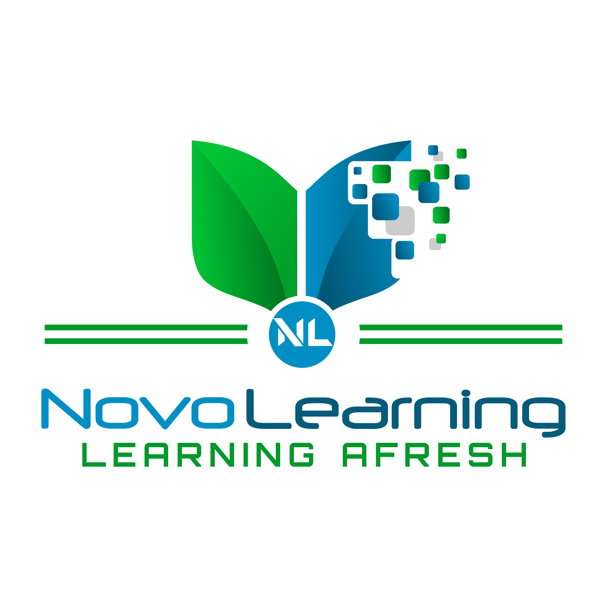

Learning Afresh
Learning Afresh supports organisations to embed professional learning into the flow of work, using technology to improve capability, performance and impact.
Selected work
- Public sector and national organisations Design of technology-enabled learning that integrates directly into operational practice across defence, policing and government contexts.
- Healthcare and clinical teams Development of digital knowledge-sharing and microlearning approaches to support busy, distributed professionals in improving practice.
- International and NGO programmes Leadership of large-scale curriculum and education initiatives, including work recognised as United Nations SDG best practice.
- Education innovation Development of a personalised, pathway-based hybrid sixth form model at Wotton House International School.
Learning Afresh is currently dormant while work continues on a longer-term edtech project.